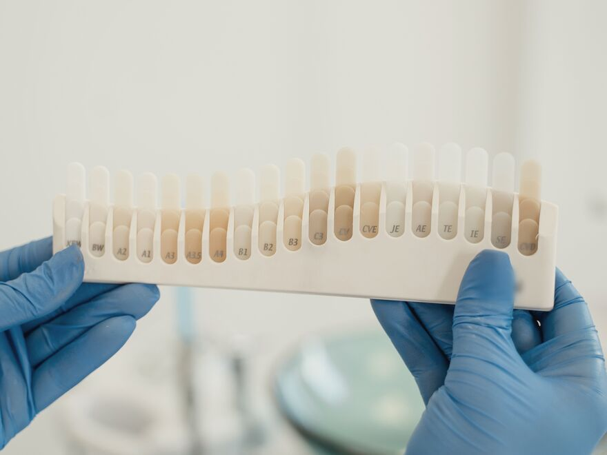

Clareamento dental
Dentes mais brancos e com cor uniforme, com acompanhamento profissional.
Saiba mais sobre clareamento dentalMostrar menos
O clareamento profissional remove manchas deixadas por café, chá, vinho ou pelo tempo. Antes, avaliamos dentes e gengivas para que o resultado fique uniforme e o processo, confortável.
- Indicado para
- Dentes amarelados ou manchados, antes de uma ocasião especial ou como parte de uma renovação do sorriso.
- Como começa
- Uma avaliação dos dentes e gengivas para confirmar se o clareamento é indicado para você.